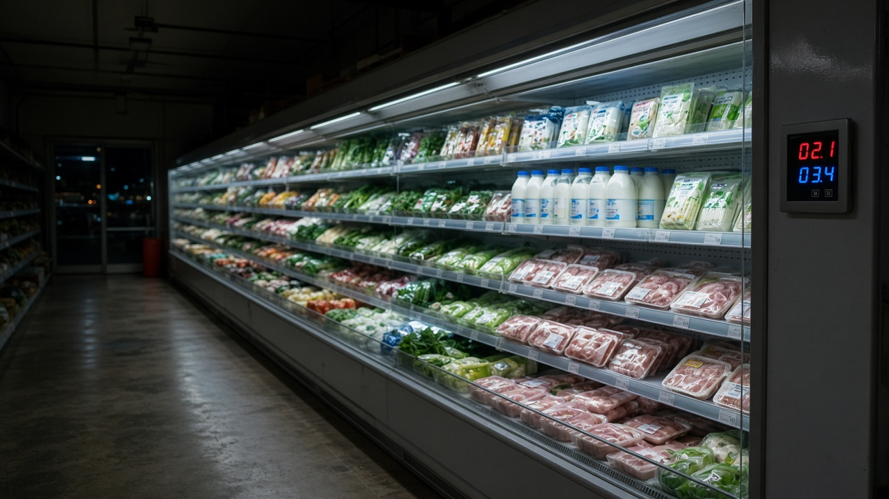
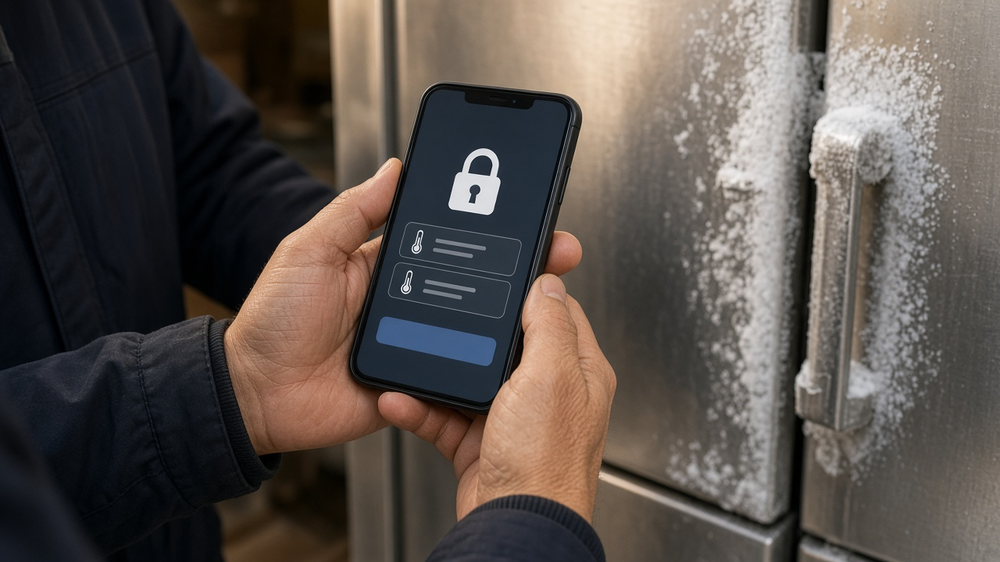
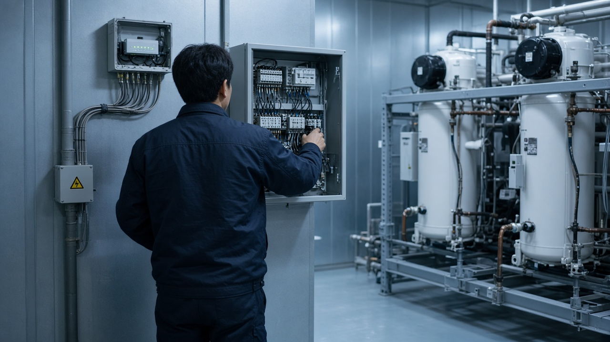

유럽 마트 냉장실을 50도까지 올린 원격 해킹, 우리 매장 온도 제어기는 초기 비밀번호부터 바꾸세요

마트나 편의점, 정육점, 저온창고를 운영하시면 요즘은 휴대폰으로 냉장고 온도를 확인하고 설정까지 바꾸는 경우가 많죠.
밤에 매장에 없어도 온도 알림을 받을 수 있으니 편한 기능인데, 바로 이 원격 기능이 해킹 통로가 됐다는 소식이 유럽에서 이어지고 있어요.
정부도 11월 8일 국내 사업자에게 보안 점검을 권고했고요.
무슨 일이 있었는지, 우리 매장은 무엇부터 확인하면 되는지 차례로 정리해 볼게요.
유럽에서는 냉장 설비의 제상 기능을 조작해 식품을 버리게 만들었어요
지난 10월 11일과 12일 프랑스 대형마트 수백 곳의 냉장 냉동 설비가 사이버 공격을 받았어요.
공격자는 매장 밖에서 설비 온도를 바꾸고, 냉각기에 낀 성에를 녹이는 제상 기능을 악용했어요.
제상 시간을 1시간에서 8시간으로 늘려 온도 경보가 늦게 울리게 만든 사례도 보도됐고, 일부 매장은 냉장실 온도가 50도까지 올라 보관하던 식품을 폐기해야 했어요.
11월 들어서는 벨기에, 스웨덴, 아일랜드 등 다른 유럽 나라 슈퍼마켓에서도 비슷한 일이 생겼고, 프랑스 혈액원 산하 보관시설 3곳에서도 냉장 설비 온도 설정이 비정상적으로 바뀌었어요.
미국에서는 사이버보안 기관과 연방수사국 등 다섯 기관이 11월 5일 현지 시각으로 냉장과 콜드체인 감시 설비 보안을 강화하라는 합동 권고를 냈어요.
공통점은 인터넷에 그대로 연결된 온도 제어기와 관리 화면, 그리고 약한 비밀번호였다는 점이에요.

정부 권고의 핵심은 비밀번호와 원격 접속 관리예요
과학기술정보통신부는 해외 사례와 보안 수칙을 현장에 알려 달라고 산업통상자원부, 중소벤처기업부, 식품의약품안전처, 농림축산식품부에 협조를 요청했고, 한국냉동공조산업협회 같은 관련 협회에도 전파를 부탁했다고 11월 8일 밝혔어요.
가장 먼저 권한 것은 제조사가 처음 설정해 둔 초기 비밀번호를 바꾸고 비밀번호 관리를 강화하는 거예요.
원격으로 감시하거나 제어할 때는 가상사설망, 흔히 브이피엔이라고 부르는 보호된 연결을 거치게 하라고 했어요.
제어 장치에 들어가는 기본 프로그램인 펌웨어를 최신으로 올리고 제조사 보안 공지를 수시로 확인하라는 당부도 있어요.
쓰지 않는 인터넷 연결은 아예 끊어 두라는 내용도 들어 있어요.
과기정통부 관계자는 11월 8일 기준 국내에서 냉장 냉동 설비 해킹 피해 사례는 보고되지 않았다고 설명했어요.
교대 근무로 돌려 쓰는 1234 같은 비밀번호가 가장 먼저 고칠 곳이에요
냉장 설비는 24시간 돌아가는 경우가 많아서 근무자끼리 인수인계를 하다 보면 쉬운 비밀번호를 그대로 공유하게 되죠.
정부도 1234처럼 단순한 초기 비밀번호를 그대로 쓰지 말라고 콕 집어 안내했어요.
매장에서 바로 해 볼 수 있는 순서는 이래요.
먼저 냉장고 온도를 휴대폰이나 컴퓨터로 볼 수 있는지, 그렇다면 어떤 앱이나 웹 화면으로 접속하는지 확인해 보세요.
그 화면의 관리자 비밀번호가 설치 때 받은 그대로인지 확인하고, 길고 추측하기 어려운 것으로 바꾼 뒤 꼭 필요한 사람에게만 알려 주세요.
설비를 관리하는 유지보수 업체가 원격으로 들어오는 경로가 있다면 그 계정과 접속 방법도 함께 물어보시는 게 좋아요.
설정 온도나 제상 시간이 바뀌면 알림이 오도록 해 두면 이상한 변화를 빨리 알아챌 수 있어요.

외부에 노출된 장비는 무료 점검을 신청할 수 있어요
우리 매장 장비가 인터넷에서 보이는지 직접 확인하기 어렵다면 정부 무료 점검을 활용할 수 있어요.
과기정통부는 외부에 노출된 장비와 시스템의 약점을 찾아 주는 공격표면 점검을 무상으로 지원하고 있다고 밝혔어요.
기업마당에 올라온 공고를 보면 과기정통부와 한국인터넷진흥원이 도메인이나 아이피 주소를 가진 기업과 비영리기관을 대상으로 외부 노출 정보 확인, 해커가 노릴 만한 취약 지점 분석, 다크웹 유출 정보 탐지, 위험도별 결과 보고서를 제공해요.
신청 기간은 2026년 12월 11일까지이고, 한국인터넷진흥원 보호나라 누리집을 통해 온라인으로 접수해요.
전국 지역정보보호지원센터를 통해서도 신청할 수 있다고 안내돼 있어요.
설비 업체에 우리 장비 모델이 보안 업데이트를 계속 받는지도 함께 물어보고, 지원이 끝난 모델이라면 교체 계획을 세워 두는 편이 안전해요.
이상하다 싶으면 국번 없이 118로 바로 신고하세요
설정한 적 없는 온도 변경, 갑자기 길어진 제상 시간, 처음 보는 접속 기록처럼 해킹이 의심되는 징후가 보이면 바로 신고하는 게 좋아요.
해킹과 랜섬웨어 같은 침해사고는 국번 없이 118로 전화한 뒤 2번을 누르면 365일 24시간 긴급상담을 받을 수 있어요.
신고 전에 바뀐 설정 화면이나 알림 내역을 사진으로 남겨 두면 원인을 찾을 때 도움이 돼요.
국내에는 아직 피해가 없다고 하지만 겨울에도 냉장 설비는 쉬지 않고 돌아가니, 이번 주 안에 비밀번호 한 번만 바꿔 두셔도 위험을 크게 줄일 수 있어요.
참고 자료 뉴시스 2026년 11월 8일 냉장고 온도까지 해킹 유럽 마트 덮친 사이버 공격 한국도 긴급 보안 점검, 전자신문 2026년 11월 8일 정부 냉장 냉동설비 해킹 경고 민간에 보안 점검 권고, 미국 사이버보안 기관 2026년 11월 5일 산업용 냉장과 콜드체인 감시 설비 보안 강화 합동 권고, 기업마당 침해사고 예방을 위한 취약점 점검 무료 지원 모집 공고, 한국인터넷진흥원 118 상담 안내
태그 냉장고해킹 냉동설비보안 초기비밀번호변경 매장보안 저온창고 공격표면점검 무료보안점검 한국인터넷진흥원 118신고 소상공인보안